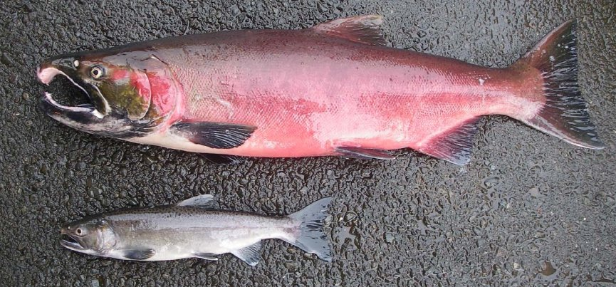
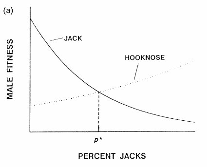
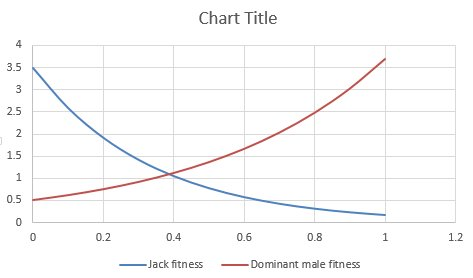
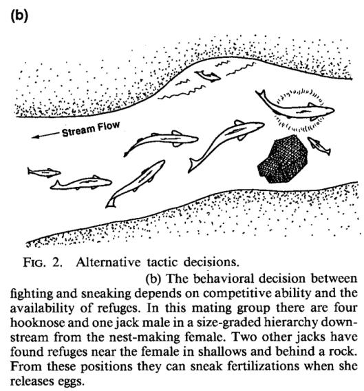
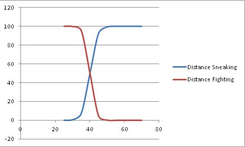
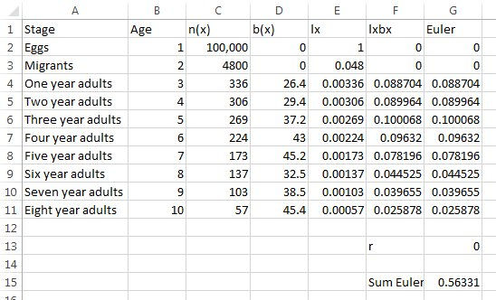

Numerical analysis
Numerical analysis is a general term that refers to methods that yield approximate solutions to problems, instead of analytical ones. Analytical solutions come from developing equations to describe a system, and then solving for some quantity of interest. Analytical solutions are mathematically correct, which means they have an infinite precision - you can calculate analytical solutions to as many decimal places as you need, and the answer will be accurate.
In contrast, numerical methods are sophisticated versions of trial and
error. Numerical solutions have a fixed level of precision, meaning that
they are only expected to be accurate to a specified number of decimal
places. We get to specify the precision, up to a point - remember, in
Excel we get 15 significant digits to play with. In the majority of
cases you would encounter, a solution that is accurate to 15 significant
digits is more than accurate enough. If you only require a solution to a
few significant digits anyway, numerical solutions can be found that are
identical to analytical ones to that level, either approach will work
equally well. For some equations analytical solutions don't exist, in
which case numerical methods are the only option.
We actually have two goals for today.
-
Learn to use numerical analysis to find solutions to problems.
-
Learn how to translate equations expressed in mathematical notation into cell formulas in Excel.
The second goal will emerge from working on the first. As you work
through the problems, I will start by giving you examples of how to do
the translation, and then will give you only advice about how to make
the translation, and will end by only giving you the mathematical
notation and telling you to do the translation yourself. Don't hesitate
to ask for help if you get stuck, but do try it yourself each time
first.
Jack and hooknose male salmon
Chinook salmon are a species of Pacific salmon that hatched in freshwater streams, move out to the ocean to develop into adults, and then return to their natal streams to spawn. Chinook males are found in two different morphs, "jacks" and "hooknoses". Hooknoses are the large, hooknose males with the curved upper jaw that you probably think of when you picture a salmon. Jacks are small males that more closely resemble females in size and color, and lack the curved upper jaw. The picture to the left shows the two different kinds of males - the jacks are very different.
For a long time jacks were thought to be "runts" that didn't reproduce. Further study has shown, however, that jacks come from the largest juveniles that reach sexual maturity early, and return to spawn a year or more younger than the hooknoses, but at a smaller body size. Rather than being runts, they are sexually precocious. Female salmon lay unfertilized eggs into depressions in the gravel at the bottom of a stream (called "redds"), which are then fertilized externally by a male. The large, hooknosed males defend females at redds, and chase away rival males. Jacks are not able to defend females against the larger, older hooknose males by fighting, but they can instead use their small body size as an advantage. Jack salmon will hide in proximity to a female and her intended hooknose male mate, and then rush in and fertilize the eggs while the hooknose male is busy defending against other big males in the area.
The success of the jack and hooknose male reproductive strategies depends on how common each is in the population. When there are few jacks in the population, the hooknose males are constantly distracted by challenges from other hooknose males, and since the jacks are more easily overlooked they have much higher success in sneaking in and fertilizing eggs. When jacks are very common, and thus the hooknose males are relatively less common, the hooknose males can focus on defending against jacks, and can fertilize the eggs as soon as they are laid by the females; jacks end up fertilizing very few eggs when there are too many jacks around.
This system is an example of "frequency dependent" selection, because the success of each reproductive strategy depends on the frequency of each type of male in the population. Frequency dependent selection tends to lead to a "stable polymorophism", meaning that more than one morphology is found in the population; because both male morphologies become highly successful when they are rare, they are protected from being eliminated from the population.
Expected proportion of jack males in the population
|
We will use what is already known from studies of breeding success in jacks and hooknose males to estimate the proportion of jacks we would expect to find in a population, given the reproductive fitness of each type of male at a particular proportion of jacks in the population. Fitness here refers to Darwinian fitness, which is a measure of an individual's genetic representation in the next generation. Fitness includes both survival and reproduction, but we can use reproduction as an index of fitness (all of the salmon die after spawning, so neither has a long-term survival advantage in any event). According to this graph, both strategies depend on the percent jacks in the population. As you move along the x-axis, you'll see that at nearly every point one strategy is better than the other. When the percent jacks is low, the jack strategy is better, and jacks will have higher fitness. Higher fitness implies that more of the offspring produced will be jacks, and in the next generation the percent jacks will be higher. Eventually the percent jacks will get large enough that the hooknose strategy starts to have higher fitness, and hooknoses will start to increase in frequency. The only place where neither strategy has an advantage is at p*, because the fitnesses are the same there - p* is thus the equilibrium percent jacks, which is the point where no change in percent jacks is expected. Populations should generally approach this equilibrium. Since the equilibrium isn't at 0 or 100%, we expect that there will always be a mix of the two male strategies in populations - thus, a stable polymorphism. |
Let's see how we can use numerical analysis to estimate this
equilibrium point.
Step 1. Download data.
Download this file and open it. The first worksheet (called "Prop jacks graphs") has three columns, one labeled "Proportion jacks", one "Jack fitness", and one "Hooknose fitness". Proportions of males that are jacks from 0 to 1 are given (which is the range of all possible values - we can't have negative proportions, or proportions greater than 1). Fitness will be represented by the number of offspring per male on average.
Step 2. Calculate the fitnesses of jacks and hooknoses.
From studies of breeding success for these different male morphs, the following equations predict the fitness of each morph:
Jack males: fitness = 3.5 e -3 (prop. jacks)
Hooknose males: fitness = 0.5 e 2 (prop. jacks)
In the "Jack fitness" and "Hooknose fitness" columns, use these equations to calculate the expected male fitnesses. To do the calculations you will need to translate them into Excel formulas. The value ex is calculated using the "exp()" function - for example, e2 is exp(2).
For example, for jack males the formula would be:
=3.5*exp(-3*a2)
Enter this formula for jack fitness in cell b2, and then copy and paste it to the rest of the Proportion jacks (through cell b12). Now you can translate the equation for hooknose males and enter it into c2, and copy/paste to the rest of the hooknose male cells.
Step 3. Plot jack fitness and hooknose male fitness against proportion jacks.
Select the three columns, and insert a scatter plot showing only smooth lines (no symbols). If your equations were entered correctly, your graph should look like this (this is the default graph, without changing the x-axis scaling, and without adding axis labels - not okay for a final product).
{kind=link}
Once you have your graph, find the place(s) where the lines cross. In cell B14 enter how many times the lines cross - this will tell us how many equilibrium solutions we need to find.
In B15 enter the approximate equilibrium you expect based on your interpretation of the graph - in other words, at about what x-axis value does the line crossing occur?
Step 4. Set up conditions for the Solver to solve.
Switch to the worksheet called "Prop jacks equil", and you will see labels for "Proportion of jacks" (B3), "Fitness of jacks" (B5), "Fitness of hooknoses" (B7), "Difference in fitness" (B9), and "Analytical solution" (B12).
In cell C3, enter the proportion of jacks you expect will be the equilibrium, which you entered in cell B15 of sheet 1. This will be your starting value for Solver to work with, which will work best if it's an educated guess - that is, a value read from a graph, rather than an arbitrary number.
In cell C5 enter the expected fitness of jacks, given this beginning proportion of jacks. This is the same formula you entered in the previous sheet for fitness of jacks, but you will use C3 from this sheet as the proportion of jacks (so, you can copy and paste the formula from the "Prop jacks graphs" sheet, but then change the cell reference to point to c3 instead of a2 in your exp() function).
In cell C7 enter the fitness of hooknoses, given this beginning proportion of jacks. Use the formula you entered in the "Prop jacks graphs" sheet, but use C3 as the proportion jacks. Note that since we only have two different morphs, the proportion hooknoses is just 1-(prop. jacks), so we do not have to estimate this value - if we're interested, we can easily calculate it from the estimate of the proportion of jacks at equilibrium.
Since we are looking for the proportion jacks where the fitnesses are equal, we need a cell that calculates how different the fitnesses are, given the proportion jacks in cell c3.
In the "Difference in fitness" cell, cell C9, calculate the difference between the fitnesses. Since fitnesses are always non-negative, we can simply take the difference here - the difference will only be zero when the fitnesses are equal, and when it's zero we've found the equilibrium proportion of jacks expected in the population.
Now everything is set, we just need to use Solver to find the equilibrium proportion of jacks.
Step 5. Use the Solver to calculate the equilibrium proportion of jacks.
The Solver is found at the right side of the ribbon in the Data tab, but it may not be turned on yet.
If you don't see a Solver option, do the following:
-
Select "File", and find the "Options" at the bottom of the green field on the left side of the window.
-
At the bottom of the "Excel Options" window will be a selection called "Add-Ins", which you should select.
-
At the bottom of the "Add-ins" window is the "Manage" "Excel Add-ins" area - click the "Go" button.
-
Finally, check the box next to "Solver Add-in" and click "OK".
Now when you switch to "Data" you should see the solver option at the right side of the ribbon.
Start the Solver. There are several things we need to do here:
-
Give Solver an objective. To do this, enter $C$9 into the "Set Target Cell" box, which is the difference in fitnesses between the strategies.
-
Click on the "Value of" button for the "To:" option and enter 0 as the value - in other words, we're telling Solver we want the differences to be 0.
-
Tell solver what cells to change in order to meet the objective. Enter $C$3 into the "By Changing Variable Cells" box - this will alter the proportion of jacks. Excel will change this cell until the difference is 0 (or, more correctly, until it is as close to 0 as we've asked it to get).
-
Tell solver what numbers it's allowed to use when it changes the variable cells. We know that the proportion jacks can't be lower than 0 or greater than 1, but Solver has no way to know this. We can tell solver to only try out proportion jack values to numbers between 0 and 1 by setting constraints. Click on "Add" next to the "Subject to the constraints" area. Set the cell reference to C3 and use <= 1 as the constraint (click "OK" to apply the constraint). Repeat this operation to add the constraint that cell C3 must be >= 0. Both constraints should now be in the Subject to the Constraints list.
{kind=link}
Note that the difference in fitness is not exactly equal to 0. This is a numerical solution, and Solver quits when it gets sufficiently close to its objective (how close can be set by you with the "Precision" and "Convergence" options, but the default is usually adequate).
Step
6. Confirm this is the correct answer by changing the starting values,
and by calculating the analytical solution
Since this is a numerical method, there's a chance that the solution isn't the right one. You can guard against this possibility by comparing the proportion of jacks that Solver produced against the graph to see if it at least looks like the right value.
Another way to double-check the result is to change the proportion of jacks to 0 and run the Solver again. Then, change the proportion of jacks to 1 and run it again. You'll see that the difference in fitness cell is not identical in each run, which means the proportion of jacks isn't identical either. But, the solution should be the same to at least five decimal places, regardless of the starting point, which will be more than precise enough for our purposes. If we were going to use this number to test experimental data, we would be comparing proportions of jacks in populations from the wild, and with all the variation that goes along with field studies we would be satisfied with a predicted value that is accurate to the 1% level, and our estimates are much better than that.
Finally, this is a case in which we could have used an analytical solution. If we set the two equations equal to one another and solve for p, the equilibrium value of p would be:
=(ln(3.5)-ln(0.5))/5
Type this into C12, next to the label "Analytical solution" - it should match your Solver solution to several decimal places, which shows you that numerical methods are viable alternatives to analytical approaches.
Size-appropriate behaviors
The next question we will address is, what behaviors should male salmon exhibit, given their sizes? Larger males can't sneak very well, because they are seen and chased off by the male guarding the female. Jacks can't guard females very well, because large males will come and chase them off before they can breed. However, we know that all male salmon know how to either sneak or fight, because the behaviors are seen at low frequencies in males that are either too large or too small to use them effectively. Using the size-appropriate behavior is clearly beneficial. The really unlucky male is the one that is intermediate in size, because he will be too big to sneak and too small to fight well - the two behaviors will work equally, but both will be equally bad.
Since fertilization is external researchers use the distance from the female as an indication of a male's chance to breed with her, with short distances being beneficial. If we know the distances to females achieved for each strategy (sneaking and fighting) across different male body sizes for jack males, we can estimate the size at which jacks should switch from primarily sneaking to primarily fighting.
Based on observations of males in the wild, the equations that characterize the distance from a female for jack males using either a sneaking or fighting strategy, as a function of his body size, are:
Sneaking: Distance = 100/(1+e-(-20+0.5*body size))
Fighting: Distance = 100/(1+e-(24-0.6*body size))
Step
1. Set up the worksheet.
Switch to sheet "Behaviors graphs", and calculate the distances for sneaking and fighting. You will need to translate these equations into Excel formulas.
These formulas are a little more complex than the first set, so a couple of helpful hints for doing this translation:
-
Watch the + and - signs. There is a minus before the exponents for both, but a minus sign before the intercept only for the sneaking behavior.
-
When in doubt, use parentheses. Some of the parentheses you need to use are in the formulas, but if you aren't sure the calculations are being done in the right order, or being applied to the right values, use parentheses to ensure the calculations are done correctly.
-
Close every open parentheses. Excel will help you with this - as you type a right parentheses, ), Excel will color code and bold the left parentheses it closes.
Step
2. Graph the distances for sneaking and fighting as a function of body
size.
Let's double-check that there is only one point at which the functions are equal - graph the distances for sneaking and fighting using size as the x-axis, and check that the lines only cross once.
If your formulas are correct, your graph should look like this (again, not meant as an example of an acceptable final graph, but this is what the default will look like if your formulas are correct).
{kind=link}
After looking at your graph, enter the number of body sizes at which behaviors should switch in cell B13, and enter the approximate body size at which you expect salmon will switch from primarily fighting to primarily sneaking in cell B14 - this will be used as a starting point for Solver.
Step 3. Set up the conditions for Solver to solve.
Switch to sheet "Behavior switch". Enter the size at which switching should occur from cell B14 of sheet "Behaviors graphs" into cell C3 to serve as your starting value.
Calculate the distance to females for sneaking males in cell C5, using the same formula as you used for the graphs, but this time using the size in C3. You should be able to copy/paste the formula from cell B2 of sheet "Behaviors graphs" to C5 of "Behavior switch", and then change the cell reference for the distance to C3.
Also calculate the distance to females for fighting males. As with the distance for sneaking males, you can copy the formula from the graphs worksheet and update the cell reference to cell C3.
Calculate the difference in distances in cell C9.
Step 4. Use the solver to calculate the size at which males should switch from sneaking to fighting.
Use the difference in distances (C9) as the target cell, and change the size in cell C3 until the target equals 0. We won't bother adding constraints here - although we could constrain the size to be greater than zero and less than the maximum size of a salmon. If we were to get a size that is negative or the size of an elephant we could re-run with constraints to avoid this. Run the solver, and copy the Size and paste-special the value into cell C12 (not the formula, just the value).
Step 5. Confirm that the starting value doesn't affect the final estimate.
Re-run Solver with a starting size of 25, and check that the size of switch is the same as before. Then re-run Solver with a starting size of 75, and check that the size of switch is the same as before.
Now, re-run it again with a starting size of 20, and you'll see that bad things happen - Solver chases a solution out into negative sizes, and then hits an error and stops.
To understand why this happens, look at the graph on the "Behaviors graphs" sheet - you'll see that below a body size of about 30 cm and above about 80 cm the graphs get very flat, and in fact the functions we're using asymptote at 0 and 100. If you give Solver a starting body size of 20 cm, the graphs are not only flat at that point, they are flat for a pretty wide range of values around 20 cm. Since Solver is finding a solution by changing the size and seeing whether it gets closer to its objective of 0 difference, when the curves are this flat a change in size has almost no effect on the difference. This means that Solver doesn't see an improvement moving in either direction from 20 cm, so it starts looking further and further away from the starting point looking for an improvement. The exp() functions we're using are raising a base (e) to the power of a function of size, and as the size gets really big the exp() function exceeds its ability to calculate the resulting exponential (the #NUM! error you may have seen in cells C7 an C9 when Solver choked are due to these numerical errors in the exp() functions).
What this show us is that it's important when you're using numerical methods to start as close to the final solutions as possible. Graphing the functions is a good idea both because it helps you understand what you're doing, and because it gives you a ballpark idea of what the final solution should be so you don't run into these problems.
You can set the distance back to 40 before you move to the next step.
Step 6. Calculate the size at which sneaking produces a distance from females of 1 cm.
Now that we have the spreadsheet set up, we can use it to ask a different question about the same set of equations. Since salmon have external fertilization, being within 1 cm of a female could be used as a measure of getting close enough to breed.
To do this, all we have to do is to use cell C5 as the target cell, and have Solver set it to a value of 1 by changing the size in cell C3.
Have Solver find this size, and copy and paste the answer to cell C14 (since cell C5 is a formula, you will need to use "Paste special" and only paste the value).
Step 7. Calculate the size at which fighting produces a distance of 1 cm.
Use cell C7 as the target cell, and have Solver set it to 1 by changing C3. Copy and paste the answer to cell C16 (use "Paste special" and only paste the value).
Finding population growth rate from a life table
We'll finish up with an example of a problem for which there is no analytical solution. As you learned in lecture, we can calculate a population growth rate from a life table using the Euler equation, which is Σlxbxe-rx. The value we want to calculate is r, and it isn't possible to solve for r. We will use Solver to estimate r numerically.
On the sheet "Life table", you have data on Chinook salmon survival and reproduction. The first column, "Stage", gives a name to each row of the table - the first row represents eggs laid, and the second row represents juvenile salmon that migrate to sea. The rest of the rows are the numbers of individuals that are adults for one year, two years, three years, and so on. The age (in years) that corresponds with each stage is in column B, and the number of individuals of each age is in C, labeled n(x). The numbers are standardized to start at 100,000 eggs laid, and you can see that for 100,000 eggs only 4800 juveniles will survive, only 336 will make it to their first year of adulthood, and only 57 live to be ten years old. The next column (D, labeled b(x)) is births per spawning adults. I put this table together assuming that all of the spawners had equal reproductive rates, but since most individuals don't spawn at one year the numbers are lowest for this adult age class. The highest reproductive rates per spawner are for five year and eight year adults, which is a reflection of the number of individuals that spawn at those ages rather than an actual difference in reproductive rate per individual.
To calculate growth rate, we will need a column for survivorship (lx), the product of survivorship and birth rate (lxbx), and then the Euler equation calculation for each row (lxbxe-rx). We will use a cell in the spreadsheet (G13) to specify the growth rate (r) in the Euler equation. We will then sum the Euler column. With this setup, any time we change the value of r in cell G13 we will change the sum of the Euler values. By telling Solver to change the growth rate in G13 until the Euler sum in G15 is equal to 1, we can estimate the growth rate.
Step 1. Calculate lx
lx is the proportion of the total number originally in the population that is still alive at age x. In cell e2 type:
=c2/c$2
Copy and paste this to the rest of the cells in column E.
Step 2. Calculate lxbx
This is just the product of the lx and the bx column. For each cell, multiply the lx by the bx value in the same row.
Step 3. Calculate the Euler value
Enter a starting value for r of 0 into cell G13.
Translate the Euler formula, (lxbxe-rx), into an Excel spreadsheet formula in cell G2, then copy and paste to the rest of the cells. Use G$13 as the value of r, and use the ages in column B for the value of x inside of your exp() function. Don't forget the minus sign on -rx.
Then, sum the values in G2 through G11 in cell G15.
If all went well, the sheet should look like this.
{kind=link}
Step 4. Use Solver to find r.
Now, use Solver to set the Sum Euler value in G15 to 1, by changing the growth rate in G13. Be sure to un-check the box that says "Make Unconstrained Variables Non-Negative" - if we left this checked then Solver would assume that growth rate is positive, which may not be true.
Let Solver find a solution. You should see that it's a negative value, which is probably correct - most species of Pacific salmon are declining.
Assignment
Done! Upload your completed spreadsheet to the course web site.